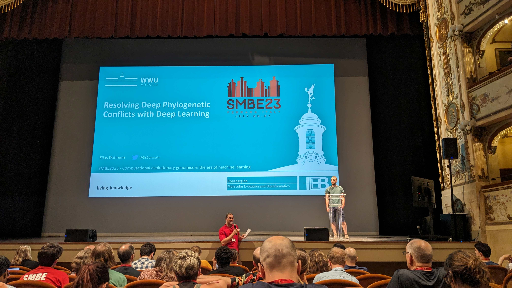
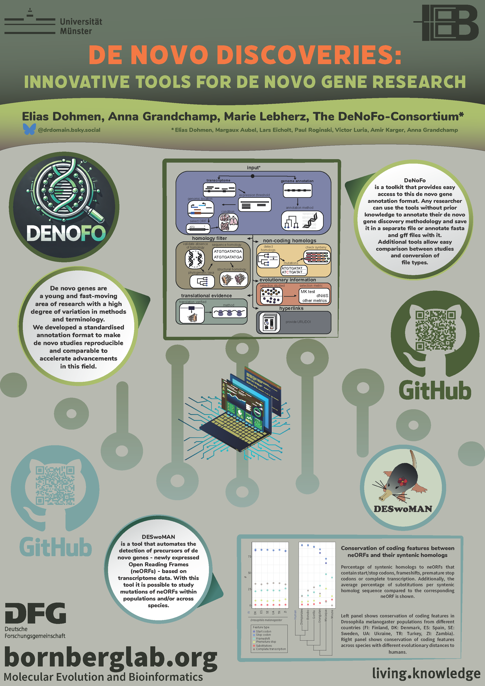
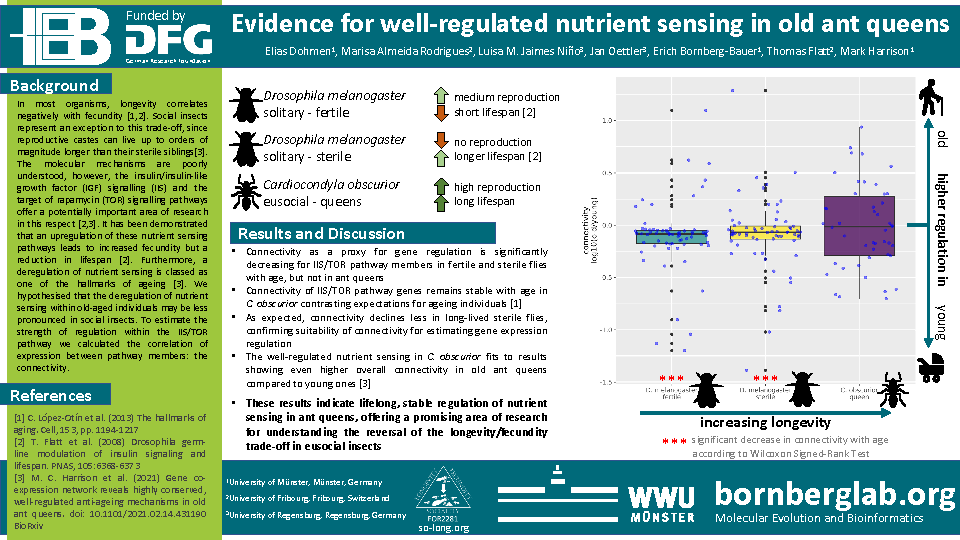
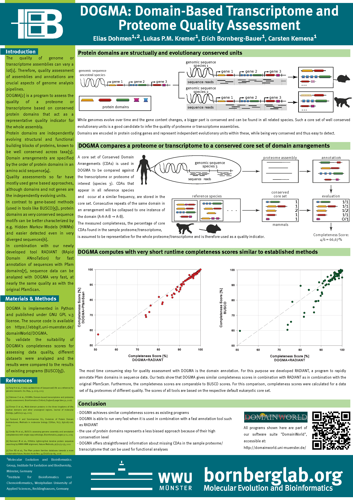

Elias Dohmen


Science Communication
“What you do makes a difference, and you have to decide what kind of difference you want to make.”
— Jane Goodall
I believe that research only gains its full value when it is shared, communicated, and understood. Without communication, even the most important scientific discoveries risk becoming invisible — with little chance to inform, inspire, or create change.
As researchers, we have a responsibility not only to generate new knowledge, but also to make it accessible and engaging. We must spark curiosity and enthusiasm — not just among peers in our fields, but especially among those outside of academia. This includes the public, students, and future scientists who might never otherwise encounter the questions we explore.
This section highlights some of my science communication efforts, including interviews, public articles, and recorded talks. Through these contributions, I aim to share the ideas behind my work in bioinformatics and make them approachable to a wider audience.
This same spirit also shapes my teaching, where I strive to encourage curiosity, critical thinking, and a genuine excitement for research. Inspiring others to ask questions — and invent new approaches to find answers — is one of the most meaningful impacts we can have as scientists!
Press and Media
English
The LEGO builder's guide of evolutionBioInformaticsGRX (RSG Spain Granada) - Recorded Talk (English) |
Unravelling arthropod genomic diversity over 500 million years of evolutionEurekalert News Release (English) |
Researchers reconstruct 500 million years of insect evolutionUni Münster News (English) |
Researchers gain new insights into the evolution of proteinsUni Münster News (English) |
Deutsch / German
Aus Alt mach Neu - Vom Lego Bauen und der EvolutionKlarText Blog der Klaus-Tschira-Stiftung (Deutsch) |
Innovation liegt in den GenenInterview in Laborpraxis (Deutsch) |
Forscher rekonstruieren 500 Millionen Jahre der InsektenevolutionUni Münster News (Deutsch) |
Forscher gewinnen neue Einblicke in die Evolution von ProteinenUni Münster News (Deutsch) |
Conferences, Talks & Seminars
Selected talks and conferences
-

Large-Scale Comparative Evolutionary Analyses Across GEvol Projects - GEvol meeting Frankfurt, Germany, October 2024 (Talk)
-
Resolving Deep Phylogenetic Conflicts with Deep Learning SMBE 2023, Ferrara, Italy, July 2023 (Talk)
-
Large-Scale Comparative Evolutionary Analyses Across GEvol Projects - GEvol meeting Bonn, Germany, October 2023 (Talk)
-
On the Tracks of Functional and Regulatory Adaptations towards Eusociality - Münster Evolution Meeting, March 2023 (Talk)
-
Preparations, Pipelines, Pitfalls in Comparative Genomics Projects - Priority Programme (SPP 2349) funded by German Science Foundation (DFG) meeting in Münster, Germany, August 2022 (Talk)
-
The LEGO builder's guide of evolution - BioInformaticsGRX (RSG Spain Granada), digital, April 2021 (Talk)
-
AI-Camp 2021 - BMBF and GI, digital, March-April 2021 (Participation)
-
Arthropod Genomics Symposium - digital, July 2020 (Talk, joint presentation with Gregg Thomas)
-
Protein Domains as a Magnifying Glass for Phylogenomics and Comparative Genomics - SMBE 2020, Québec, Canada, June 2020 (Talk, with DAAD congress travel grant; cancelled due to COVID-19 pandemic)
-
Reconstruction of evolutionary history based on protein domains - Institute of Biotechnology and Biomedicine, Barcelona, Spain, October 2017 (Seminar)
Posters
Selected posters presented at international conferences and meetings.
-

De Novo Discoveries: Innovative Tools for De Novo Gene Research - Münster Evolution Meeting, Münster, Germany, March 2025
-

Evidence for well-regulated nutrient sensing in old ant queens - Cold Spring Harbor meeting on Biology & Genomics of Social Insects, digital, March 2021
-

DOGMA: Domain-Based Transcriptome and Proteome Quality Assessment - Basel Computational Biology Conference, Basel, Switzerland, September 2017